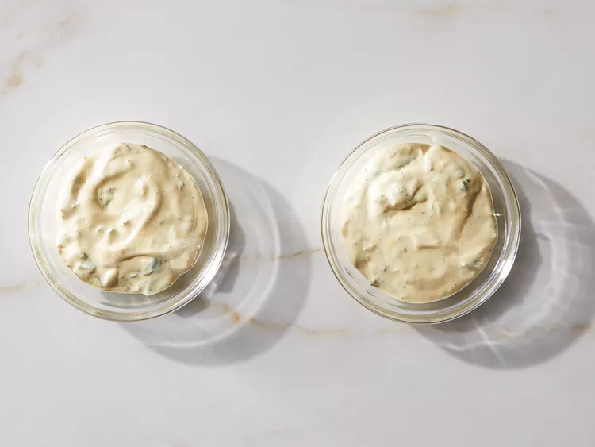
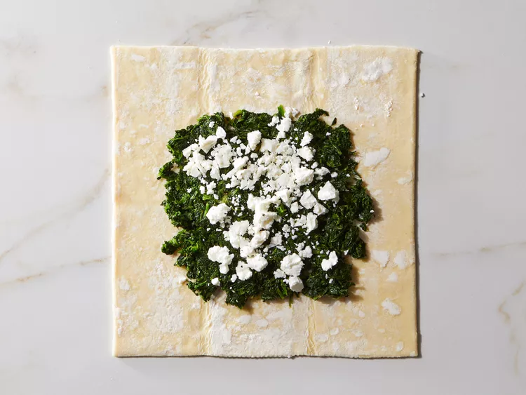
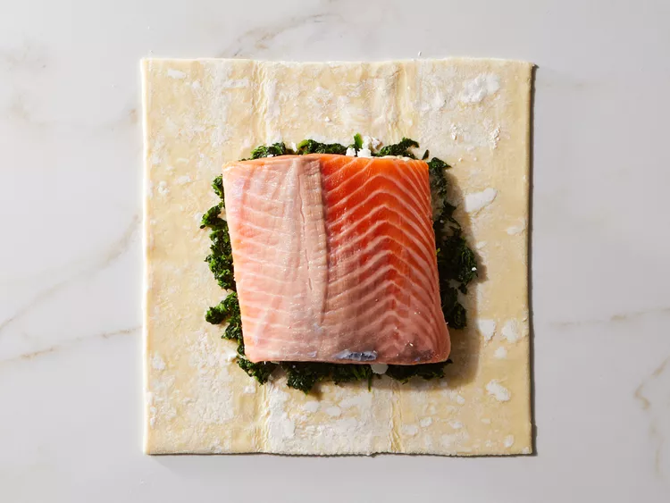
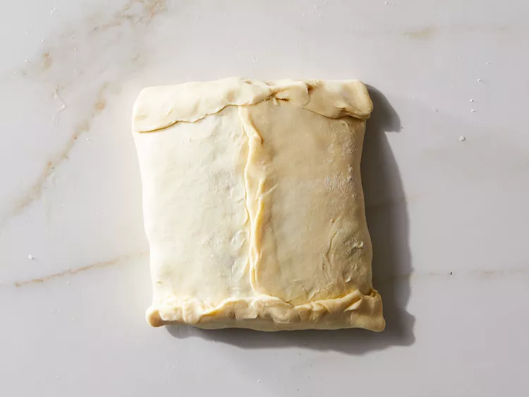

Salmon Wellington
This salmon Wellington, or salmon in puff pastry, has a delicious spinach, feta, and Dijon mustard filling. The salmon stays lovely and moist and the pastry bakes up golden and crisp. It makes a wonderful elegant main dish that's perfect for impressing family and friends!
Ingredients
- 1 (12-ounce) skinless salmon fillet
- 1/4 teaspoon kosher salt
- 1/4 teaspoon ground black pepper
- 1/3 cup mayonnaise
- 2 tablespoons Dijon mustard
- 1 teaspoon chopped fresh oregano
- 1 teaspoon chopped fresh basil
- 1 teaspoon chopped fresh dill
- 1 teaspoon lemon zest
- 1 teaspoon chopped fresh thyme
- 1/4 cup crumbled feta cheese
- 1 cup frozen chopped spinach, thawed and drained
- 1 sheet frozen puff pastry, thawed
- 1 egg, beaten
- 1 tablespoon water
- lemon wedges to serve
Instructions:
- Step 1
Gather all ingredients. Preheat the oven to 400 degrees F (200 degrees C). Line a baking sheet with parchment paper; set aside. - Step 2
Pat salmon fillet dry with paper towels. Sprinkle salt and pepper on both sides of salmon fillet. - Step 3
Mix mayonnaise, mustard, oregano, basil, dill, lemon zest, and thyme in a small bowl. Set aside ½ of the mixture for serving. - Step 4
Spread remaining mixture on the top of salmon fillet. - Step 5
Unfold puff pastry on a lightly floured surface. Use your fingers to even out the folds in the pastry. - Step 6
Spread spinach in center of pastry in a rectangle the size of the fillet, and sprinkle with feta cheese. - Step 7
Place salmon, mayonnaise-side down, on top of feta cheese. - Step 8
Beat egg and water together in small bowl. Brush the edges of pastry with egg wash to ensure the puff pastry is “glued” together. - Step 9
Lift edges of pastry and slightly stretch to enclose the salmon. - Step 10
Pinch edges to seal. Place the bundle, seam-side down, on prepared baking sheet. Brush egg wash on tops and sides of pastry. - Step 11
Cut several small slits in top of pastry to allow steam to escape. - Step 12
Bake in preheated oven until pastry is golden brown, about 40 minutes. An instant-read thermometer inserted into the center of the salmon should be at least 145 degrees F (62 degrees C). Let stand for a few minutes before serving. - Step 13
Serve with reserved herb Dijon mixture and lemon wedges.




